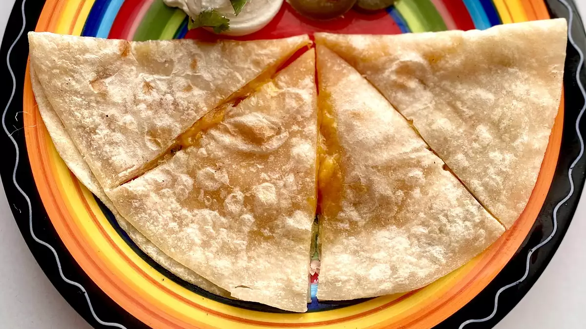

Microwave Quesadillas

Description
Quesadillas are a favorite with my family. With 3 grandkids away at college, this is an easy and economical recipe
that they can make at their dorms. You can swap corn tortillas for the flour tortillas and any cheese that you like.
Ingrediants
- 2 flour tortillas
- 1/2 cup shredded sharp Cheddar cheese
Steps
- Place one tortilla on a microwave-safe plate. Sprinkle Cheddar cheese all over the tortilla. Top with second
tortilla. Microwave until cheese is melted, 30 to 45 seconds.